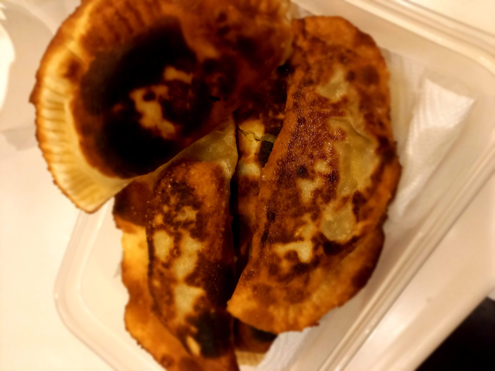

Pastelillos

Description
Pastelillos are often eaten in Puerto Rico and other Latin American and Caribbean countries. They are made with a thin dough,
stuffed with minced meat or many other stuffings like chicken or even guava paste with cheese. The edges of the dough are crimped
together with a fork and then they are deeped fried until crispy and golden.
Ingredients:
For dough:
- 500g flour
- 60g butter
- 1 egg yolk
- 1/2 tbsp sugar
- 1 tsp oil
- 125ml milk
- 1 pinch salt
For stuffing:
- 250g minced meat
- 1 finely chopped onion
- 2 boiled eggs, chopped
- 2 tbsp seedless olives
- 1/2 tsp each cumin and sugar
- 1 grated carrot
- 30g raisins
- 1 pinch pepper
- 40ml oil, for frying
Steps:
For dough:
- Place flour in a bowl, arrange it in the form of a volcano.
- Add butter, egg yolk, oil, sugar, and salt in the center and mix together with hands.
- Pour milk in slowly while mixing.
- When it's all mixed together and dough does not stick to hands, spread dough out on the counter, flatten with a rolling pin and cut out 10-12cm circles.
For stuffing:
- Heat frying pan over medium heat. When hot, add meat.
- When meat turns brown add all the other ingredients.
For frying:
- Heat oil in deep pan.
- Place a spoonful of meat on half of the dough circle.
- Wet edge of dought with fingers, fold dough in half and crimp edges togther with a fork.
- Fry in oil, turning over and making sure it's completely golden before taking it out.
- Enjoy!
Go back